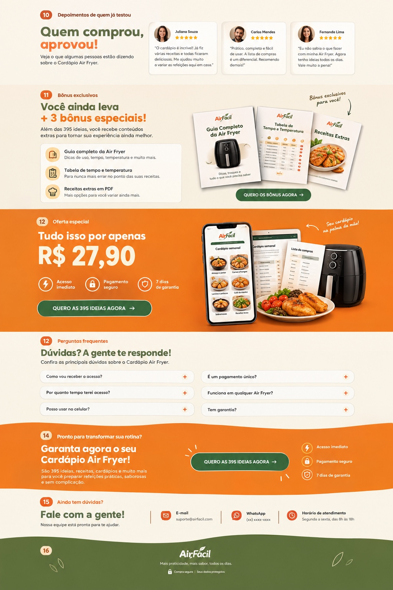

Gasta demais
com delivery
Quando não sabe o que fazer, acaba pedindo comida fora.
Receitas práticas para café da manhã, lanches, almoço, jantar e sobremesas.
Quando não sabe o que fazer, acaba pedindo comida fora.
Você abre a geladeira e fica sem saber por onde começar.
Tem uma Air Fryer e acaba fazendo sempre as mesmas receitas.
Frango, batata frita e outras opções, sem variedade no dia a dia.
O Cardápio Air Fryer reúne ideias práticas para você decidir o que preparar sem perder tempo procurando receitas na internet.
QUERO ACESSAR AS 395 IDEIASComida boa todos os dias,
sem complicação!
O objetivo é te entregar receitas e ideias práticas. É fácil ter acesso e começar.
Encontre opções para qualquer refeição.
Confira a receita no App ou no PDF.
Organize os ingredientes e prepare sem complicação.
Um conteúdo completo para você encontrar o que preparar, organizar suas refeições e aproveitar melhor sua Air Fryer.
Receitas e sugestões para todas as refeições.
Ingredientes, modo de preparo e fotos.
Sugestões para toda a semana.
Organize os ingredientes com mais praticidade.
Acesse no celular, tablet ou computador.
Compre uma vez e consulte sempre.
Do café da manhã à sobremesa, tenha opções para todos os momentos do seu dia.
Receitas práticas e saborosas para começar o dia.
Ideias rápidas para qualquer hora.
Receitas completas para o dia a dia.
Diversas opções para variar o cardápio.
Doces irresistíveis para todos os gostos.
Tenha ideias prontas para cozinhar mais, variar suas refeições e aproveitar melhor sua Air Fryer.
QUERO AS 395 IDEIAS AGORAVeja as mensagens e os pratos preparados.
Deslize para ver mais. Toque na imagem para ampliar.
Além das 395 ideias, você recebe conteúdos extras para tornar sua experiência ainda melhor.
Dicas de uso, tempo, temperatura e muito mais.
Uma referência prática para o preparo das receitas.
Mais opções para você variar ainda mais.

Tempo restante
Pagamento único · Acesso vitalício
395 ideias + App e PDF + 3 bônus especiais.
Produto digital. Air Fryer e dispositivos não inclusos.
Confira as principais dúvidas sobre o Cardápio Air Fryer.
Após a confirmação do pagamento, as instruções de acesso serão enviadas para o e-mail informado na compra. Confira também as pastas de spam e promoções.
Sim. O valor de R$ 27,90 é pago uma única vez. A oferta apresentada não tem mensalidade.
O acesso ao conteúdo adquirido é vitalício. Você também pode baixar os PDFs para consultar quando quiser.
As ideias podem ser adaptadas a diferentes modelos. O tempo e a temperatura podem variar conforme a potência, a capacidade e os ingredientes. Siga também o manual do seu aparelho.
Sim. Você pode consultar o conteúdo no celular, tablet ou computador. Os PDFs também podem ser baixados e impressos.
Sim. A oferta inclui 7 dias de garantia a partir da compra. Nesse período, você pode solicitar o reembolso pelo canal de suporte informado no comprovante de pagamento.
São 395 ideias, receitas, cardápios e muito mais para você preparar refeições práticas, saborosas e sem complicação.
Nossa equipe está pronta para ajudar.